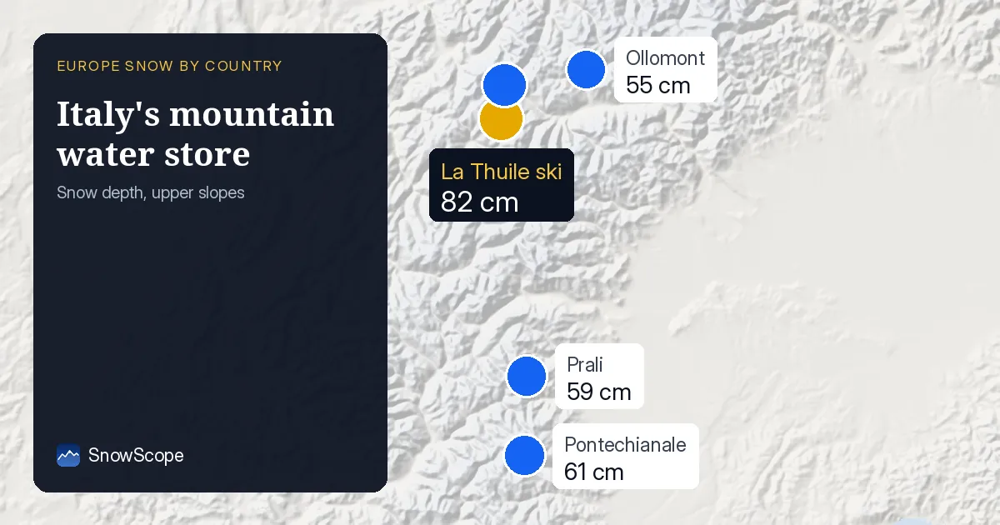

Italy's mountain water store: 209 cm in the Aosta Valley, 47 cm across three days
In the past three days, Italy's mountains stored water as snow very unevenly. The Aosta Valley, on the Swiss border, received 209 cm of snow—far more than anywhere else—while the central Apennines saw only 10 cm. This pattern shows how Atlantic storms hit the Alps hard but leave the southern ranges dry.
See the live snow forecast for La Thuile ski in the SnowScope appSnow depth, powder alerts and the 3D map, free.
The Aosta Valley holds the most water
The Aosta Valley captured the lion's share of fresh snow in the past 72 hours: 209 cm fell there, nearly four times more than the Piedmont Alps next door. This deep snow matters for water storage. At La Thuile ski, which sits at 2,038 m elevation, 84 cm fell in three days, bringing the total depth to 82 cm. Courmayeur, also in the Aosta Valley and higher at 2,749 m, saw 92 cm of new snow and now holds 80 cm. These high-altitude sites are nature's reservoirs—snow will melt slowly through winter and feed rivers into spring.
The Piedmont Alps to the east received less, though still significant amounts. Pontechianale and Prali both sit around 2,100 m elevation and saw 27–28 cm of new snow in 72 hours. The gap between valleys shows how narrow the band of heavy snow was: the storm air mass hit hardest where peaks face the incoming Atlantic flow.
| Resort | Snow depth | New snow, 72 h | Coming, next days | Top |
|---|---|---|---|---|
| La Thuile ski | 82 cm | 84 cm | 19 cm | 2,608 m |
| Courmayeur | 80 cm | 92 cm | 20 cm | 2,749 m |
| Pontechianale | 61 cm | 28 cm | 29 cm | 2,659 m |
| Prali | 59 cm | 27 cm | 28 cm | – |
| Ollomont | 55 cm | 65 cm | 20 cm | – |

In the past 24 hours, snow slowed
Yesterday to today, only 9 cm fell at the highest peaks. The storm system is weakening. Yet the three-day event was substantial: 25,580 square kilometres of Italy's mountains received at least 5 cm of fresh snow in those 72 hours. Snow cover across the country grew from 18,740 km² a week ago to 28,200 km² today—a gain of 9,460 km², though yesterday saw a slight drop of 2,360 km² as lower elevations melted.
Height matters. Below 1,500 m, almost no snow lies on the ground. Between 1,500 m and 2,000 m, only 5 cm covers three-quarters of the land. Above 2,000 m, the snowpack thickens: at 2,000–2,500 m, mean depth reaches 14 cm; above 2,500 m, it averages 31 cm and covers every square metre.

More snow is coming, heaviest on Wednesday
The next system arrives soon. In the next three days, the Aosta Valley and Piedmont Alps will see roughly 20 cm more. Wednesday, 25 November, is forecast to be the heaviest snow day: 28 cm may fall at the highest peaks. This will add another 36–40 cm to high peaks by next weekend.
The outlook for the week after (1–7 December) is drier. Only 3 cm is forecast in that period. So the next few days are critical: they will bulk up the snowpack before a drier spell takes over.
Some resorts are well-stocked already
La Thuile ski leads across Italy with 82 cm today. Courmayeur and Ollomont—both in the Aosta Valley—are close behind. These sit well above the 1,500 m snow line and have benefited from the heaviest snow band. Even so, early-season snow is thin. Rocks and grass may still show through on steep slopes and south-facing aspects, especially below 2,000 m.
In the Piedmont Alps, Pontechianale and Prali have 61 cm and 59 cm respectively, but they will need the next few days to build a thicker base. The central Apennines received only 10 cm in 72 hours and remain thin—just 1 cm on average between 1,000 m and 1,500 m.
How this week compares to normal
Early season snow is rare in Italy. La Thuile and Courmayeur now hold roughly three times more snow than their November average—101 cm and 105 cm respectively, against 32 cm and 29 cm in a typical year. Ollomont shows similar richness. This is unusual for late November but welcome. The water stored in these peaks will help rivers and reservoirs through the winter if it melts at a steady pace.
Austria and Switzerland are also snowy but drier overall: Austria's snow cover stands at 61 percent, Switzerland at 76 percent, against Italy's 30 percent. Italy's fresh snow fell in a narrow band—dramatic gains in the northwest, much less elsewhere.
What to watch next
Track the heaviest snow on Wednesday and check the official avalanche bulletin if you plan to venture off-piste. Early-season snow can hide rocks; fresh snow on steep slopes can be unstable. By this weekend, Italy's high peaks will hold significantly more water, but the base below 2,000 m will still be patchy. After 1 December, dry weather is likely to slow snow cover growth, so make the most of the next few days at higher elevations.
Tips for skiers
- Ski above 2,000 m where the snowpack is thickest (14–31 cm mean depth) and stable. The Aosta Valley resorts—La Thuile ski and Courmayeur—have the most snow.
- Expect rocks and vegetation to show through below 1,500 m, even after Wednesday's fresh snow. Avoid lower runs until November deepens.
- Check the official avalanche bulletin before entering steep terrain or off-piste zones. Fresh snow on new slopes can slide, especially on north-facing aspects where the new snow sits on cold, weak early-season base.
- Wednesday is the wettest day ahead: 28 cm may fall. Plan to ski Thursday and Friday to enjoy the refreshed surface.
- Use the SnowScope app to find depth and new snow by elevation band and aspect as conditions change daily over the next week.
About these numbers
Resort snow depths are the deepest snow on the resort's upper slopes on the date shown; they are estimates for an area, not a measurement at one point. Forecasts can change. Always read the official avalanche bulletin before going off-piste.
Cite this report
For research, teaching or the press: the numbers and charts are free to reuse under CC BY 4.0 with this citation.
SnowScope (2026), Italy's mountain water store: 209 cm in the Aosta Valley, 47 cm across three days, https://snowscope.app/blog/en/2026/11/italy-where-the-snow-fell-23-november-2026.html, accessed 2026-11-23
SnowScope (Atlas Labs). (2026, November 23). Italy's mountain water store: 209 cm in the Aosta Valley, 47 cm across three days. SnowScope snow reports. https://snowscope.app/blog/en/2026/11/italy-where-the-snow-fell-23-november-2026.html
BibTeX
@misc{snowscope2026italywherethesnowfell23n,
author = {{SnowScope (Atlas Labs)}},
title = {Italy's mountain water store: 209 cm in the Aosta Valley, 47 cm across three days},
year = {2026},
month = nov,
howpublished = {\url{https://snowscope.app/blog/en/2026/11/italy-where-the-snow-fell-23-november-2026.html}},
note = {Published 2026-11-23 12:43 UTC; accessed 2026-11-23}
}· CC BY 4.0 · Methods, data and tools →
La Thuile ski: snow and temperature by height, this winter vs last (tools) →
Follow La Thuile ski
Free: a message when fresh snow is coming, and the forecast every morning.
More snow reports

Savin Kuk above Žabljak picked up 22 cm of snow from 13 to 19 November and still has 6 cm today. Kolašin 1450 and 1600 are bare. The week day by day, and the next chances.

Up to 30 cm of snow fell on northern Velebit and Bjelolasica on Friday 13 November 2026. By Tuesday it was gone. Day by day, what the mountains kept, and when snow comes back.

Can a cautious first-timer trust Courmayeur in December when mid-mountain averages 60 cm of snow across our past winters?